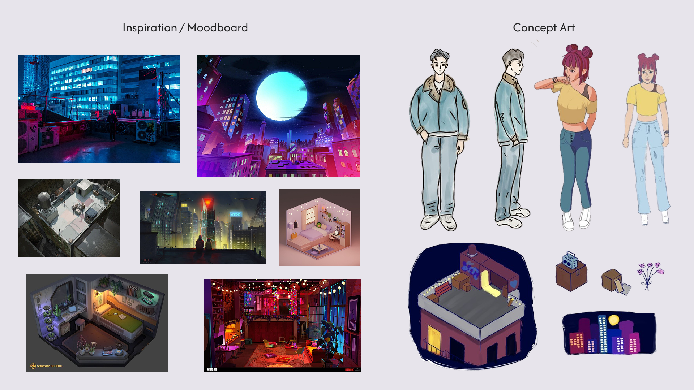
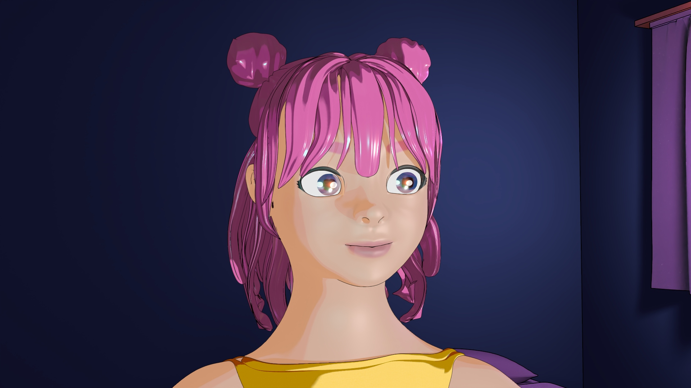
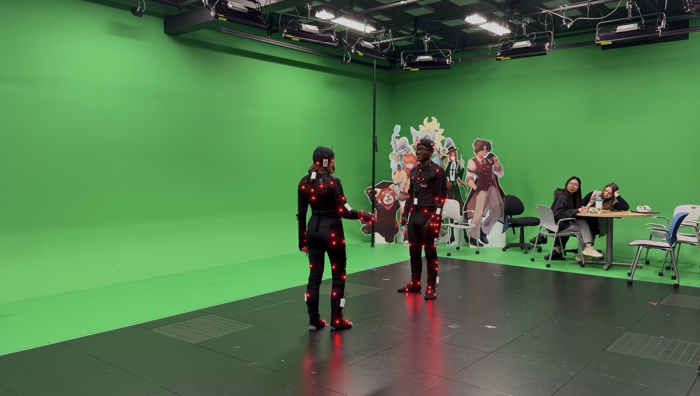
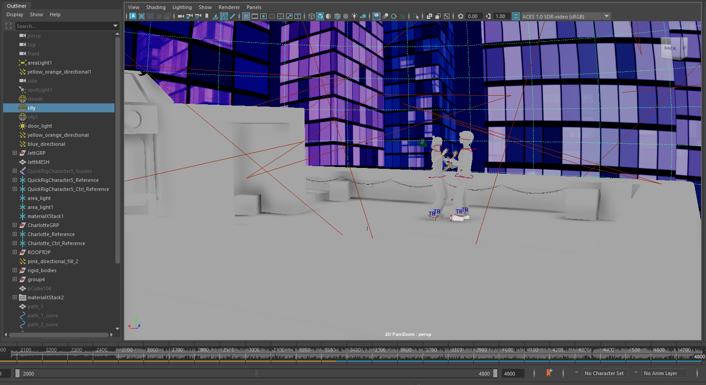

Our Spot | Animated Short
The story follows Charlotte, who feels frustrated and unmotivated with taking her next steps in life. After receiving a mysterious paper airplane invitation from her long-distance boyfriend, Jett, she is led to a rooftop under the city lights, where she rediscovers her passion for dancing, letting go of her expectations and learning to dance only for herself. The film highlights themes of playfulness, connection, and following your passion.
Defining Success
For our IAT 343 Animation class, myself and teammates Mary, Caroline, Kayla, and Olga, embarked on a two-month project with the goal of using Maya to create a cartoonish and heartfelt world that contrasts the repetitive routines of life with a brief, dreamy escape.
I directed the film, and in addition to helping with modelling/texturing/animating each step of the way, I oversaw the post-production pipeline, rendering and editing our shots into a cohesive film.

Our moodboard / inspiration for our intended colour palette and aesthetic, as well as our initial concept art.
Modelling & Texturing
It was a long process getting all of our assets ready, as we had to model almost everything ourselves from scratch. We divided up the assets between the five of us, each taking key parts of the characters and their surroundings.
We divided the team up to rig and texture the assets, assigning two people to each, with me floating between the two. I primarily ended up working on the character's facial rigging.
In addition to my assigned assets, which ended up being mostly character-focused, I coordinated the team to ensure everything was completed that needed to be, listing out what needed to be done and assigning tasks evenly to each member. Since I had more 3D modelling experience than many of my teammates, I also served as technical support, assisting with topology and technical difficulties that came up along the way.

Our protagonist Charlotte, whose face and hair were modelled by myself, and her body modelled by teammate Mary. I also modelled her boyfriend Jett, although there are many aspects of him that I would have done differently knowing what I know now.
Motion Capture
We opted to use motion capture animation for this short because we wanted to capture fluid, complex animation in a way that we wouldn't be able to do with our given skillset and timeframe otherwise. It allowed the characters to do more complex movements to the music while feeling much more alive.
However, the motion capture came with its own set of challenges: we realized on the day of recording that our rigs were not ready like we had previously thought, and so we had to delegate some of our team members to work on fixing the models while the rest of us continued the recording process. This meant that we were not able to preview our recording data with our actual models. Once they were ready, we sent them over to the technicians at StudioSIAT to clean the data - this delay between recording and being able to move forward on the project took about a week out of our already tight timeline. However, it was definitely the right choice for this project: the natural feeling movement is important to give the dance character and energy.
I facilitated scheduling the motion capture with the lovely team at StudioSIAT and coordinated communication between them, my team, and our talent. I also directed the talent during the recordings.

Our motion capture recording setup in the StudioSIAT motion effects studio!
Animation and Post-Production
With the modelling and motion-capture recording done, once the rigs were able to accommodate the motion, it was just a matter of keyframing camera movement within the dancing scene and completing the post-production process, such as editing and sound design.
I oversaw the rendering process alongside teammate Mary over the course of about a week: we worked closely together to ensure consistency in textures and lighting across different shots, tweaking as we went. I also compiled and edited the film, readying it for my teammates to jump in with sound design and post-production effects for the final cut.

Our Maya scene with motion capture data and music embedded - we had about 2800 frames of movement data.
Outcomes and Takeaways
There's a lot about this project that I would do differently or would love to improve upon in the future. All five of us had never worked in Maya or done much animation before, and learning as we went led to a lot of technical difficulties that shine through in the final video. For example, the characters' rigs are not fully equipped to deal with the level of movement that our motion capture data had them doing. We did not rig their hands past the wrist, and I would have loved to see more precise movement throughout. We were not able to give Charlotte her originally planned off-the-shoulder top due to technical and time constraints, and even with her tank top, parts of Charlotte's clothes clip through her skin. In addition, we were informed prior to the motion capture that getting the characters to touch would be challenging, and I wish we had had more time to refine the movements to create finer gaps between the two.
However, despite my desired changes, I am very proud of what we were able to create in this time frame with so little rigging and animation knowledge in the beginning. Each step of the way, my team members and I had to use our finest problem-solving skills, communicating and suggesting fixes and improvements. In the end, we were able to create a vibrant world for our characters and a story that highlights a break from the monotony of life. We earned a grade of 100% on the project for our use of the principles of animation and the world we were able to create.
I learned a LOT over the course of this project about proper topology, how to model character bodies, clothing and hair, how to create basic rigs and animate them, Arnold toon texturing, and basic Substance Painter texturing (to draw on eyebrows and colour in the face), and it was incredibly useful to get firsthand experience working with a team in the Maya animation pipeline. I'm particularly proud of the face mesh I created for Charlotte, as it was my first time modelling a character, and I think I was able to make her quite cute.